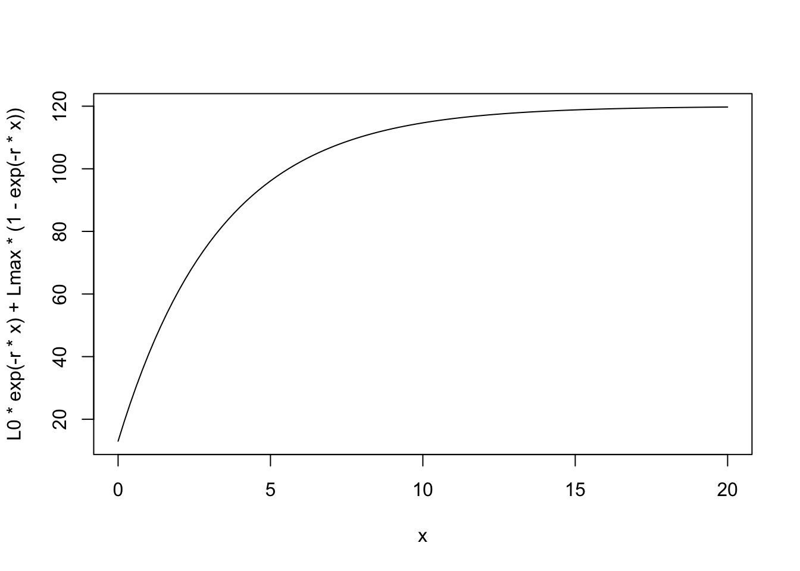

library(brms)
library(ggplot2)
library(tidyverse)
library(tidybayes)
library(cmdstanr)growing things get bigger
Animals get bigger over time, and young change in size faster than more mature individuals. The classic Von Bertanaffy growth equation has animals growing from a starting size to a final asymptotic size:
\[ L_t = L_0e^{-rt} + L_{max}(1 - e^{-rt}) \]
- \(L_0\) is the starting size
- \(L_{max}\) is the final size
- \(r\) is a growth rate
This equation yields a simple result:
L0 <- 13
Lmax <- 120
r <- .3
curve(L0 * exp(-r*x) + Lmax*(1 - exp(-r * x)), xlim = c(0, 20))
This is the equation in continuous time
However we often measure animals at discreet moments in time, having as a reference their last measurement. We can use a discrete version of this equation in these cases:
vb_disc <- function(L_tm1, r, time, Lmax) {
L_tm1 * exp(-r*time) + Lmax*(1 - exp(-r * time))
}
timevec <- rep(1, times = 13)
size <- numeric(length(timevec)+1)
size[1] <- 13
for (t in 1:length(timevec)){
size[t+1] = vb_disc(size[t],
r = r,
time = timevec[t],
Lmax = Lmax)
}
curve(L0 * exp(-r*x) + Lmax*(1 - exp(-r * x)),
xlim = c(0, 20))
points(cumsum(c(0,timevec)), size)
This works even if the points we measure at are not regular:
timevec <- runif(n = 13, min = .7, max = 3)
size <- numeric(length(timevec)+1)
size[1] <- 13
for (t in 1:length(timevec)){
size[t+1] = vb_disc(size[t],
r = r,
time = timevec[t],
Lmax = Lmax)
}
curve(L0 * exp(-r*x) + Lmax*(1 - exp(-r * x)),
xlim = c(0, 20))
points(cumsum(c(0,timevec)), size)
So we can see that this is the same equation. Let’s simulate observations of a growing animal with measurement error
L0 <- 13
Lmax <- 120
r <- .3
sigma = 2
grow_data <- tibble(time = seq(from = .5, to = 21, length.out = 40),
size = L0 * exp(-r* time) + Lmax*(1 - exp(-r * time)),
size_obs = rnorm(n = length(size), mean = size, sd = sigma))
grow_data |>
ggplot(aes(x = time, y = size_obs)) + geom_point()
Translating the model to Stan
vb_discrete <- cmdstan_model(
here::here(
"posts/2023-10-23-discrete-vb-brms-stan/vb_discrete_meas.stan"),
pedantic = TRUE)
vb_discrete data {
int<lower=0> n;
real age_first_meas;
vector[n-1] time_diff;
vector[n] obs_size;
int<lower=0> n_pred;
vector[n_pred-1] diff_pred;
}
parameters {
real<lower=0> Lstart;
real<lower=0> Lmax;
real<lower=0> r;
real<lower=0> sigma;
}
model {
Lstart ~ normal(10, 2);
Lmax ~ normal(120, 10);
r ~ exponential(1);
sigma ~ exponential(1);
// could add measurment error to age
obs_size[1] ~ normal(Lstart * exp(-r*age_first_meas) + Lmax*(1 - exp(-r * age_first_meas)), sigma);
obs_size[2:n] ~ normal(obs_size[1:(n-1)] .* exp(-r*time_diff) + Lmax*(1 - exp(-r*time_diff)), sigma);
}
generated quantities {
vector[n_pred] mu;
vector[n_pred] obs;
mu[1] = Lstart;
for (i in 2:n_pred){
mu[i] = mu[i-1] .* exp(-r*diff_pred[i-1]) + Lmax*(1 - exp(-r*diff_pred[i-1]));
}
for( j in 1:n_pred){
obs[j] = normal_rng(mu[j], sigma);
}
}some_obs <- grow_data |>
mutate(sampled = sample(sample(0:1, length(time), replace = TRUE, prob = c(.4, .6)))) |>
filter(sampled > 0) |>
# lagged time
mutate(time_diff = time - lag(time))
first <- some_obs |> head(1)
rest <- some_obs |> slice(-1)
diff_pred <- c(rep(2, times = 5), rep(5, 3))
vb_discrete_post <- vb_discrete$sample(
data = list(
n = nrow(some_obs),
time_diff = rest$time_diff,
age_first_meas = first$time,
obs_size = some_obs$size_obs,
n_pred = length(diff_pred) + 1,
diff_pred = diff_pred
),
refresh = 0
)Running MCMC with 4 sequential chains...
Chain 1 finished in 0.1 seconds.
Chain 2 finished in 0.1 seconds.
Chain 3 finished in 0.1 seconds.
Chain 4 finished in 0.1 seconds.
All 4 chains finished successfully.
Mean chain execution time: 0.1 seconds.
Total execution time: 0.7 seconds.vb_discrete_post$draws() |>
gather_rvars(mu[i]) |>
mutate(time = cumsum(c(0, diff_pred))) |>
ggplot(aes(x = time, dist = .value)) +
stat_lineribbon() +
scale_fill_brewer(palette = "Greens") +
geom_point(aes(x = time, y = size_obs),
inherit.aes = FALSE, data = grow_data)Warning: Using the `size` aesthetic with geom_ribbon was deprecated in ggplot2 3.4.0.
ℹ Please use the `linewidth` aesthetic instead.Warning: Unknown or uninitialised column: `linewidth`.Warning: Using the `size` aesthetic with geom_line was deprecated in ggplot2 3.4.0.
ℹ Please use the `linewidth` aesthetic instead.Warning: Unknown or uninitialised column: `linewidth`.
Unknown or uninitialised column: `linewidth`.
vb_discrete_post$summary()# A tibble: 23 × 10
variable mean median sd mad q5 q95 rhat ess_bulk
<chr> <num> <num> <num> <num> <num> <num> <num> <num>
1 lp__ -21.6 -21.2 1.57 1.34 -24.6 -19.8 1.00 1697.
2 Lstart 10.0 10.0 1.61 1.57 7.30 12.6 1.00 3028.
3 Lmax 118. 118. 1.95 1.88 115. 122. 1.00 3063.
4 r 0.332 0.332 0.0238 0.0226 0.295 0.372 1.00 2828.
5 sigma 2.13 2.07 0.362 0.334 1.62 2.78 1.00 2748.
6 mu[1] 10.0 10.0 1.61 1.57 7.30 12.6 1.00 3028.
7 mu[2] 62.5 62.5 2.16 2.02 58.9 66.0 1.00 3801.
8 mu[3] 89.4 89.5 2.18 2.05 85.8 92.9 1.00 4074.
9 mu[4] 103. 103. 1.78 1.67 100. 106. 1.00 5036.
10 mu[5] 110. 110. 1.56 1.51 108. 113. 1.00 4967.
# ℹ 13 more rows
# ℹ 1 more variable: ess_tail <num>can it be written in BRMS?
I want to ask, what happens if we fit a similar model in brms? I’m using a lagged column of size.
This feels like a different model, but at least in this simple example, the posterior is close to the real value.
## add a lagged growth measurement
lagged_obs <- some_obs |>
mutate(sizelast = lag(size_obs)) |>
# drop first row
slice(-1)
vb_formula <- bf(size_obs ~ sizelast * exp(- exp(logR) * time_diff) +
sizeMax * (1 - exp(-exp(logR) * time_diff)),
logR ~ 1,
sizeMax ~ 1, nl = TRUE)
get_prior(vb_formula, data = lagged_obs) prior class coef group resp dpar nlpar lb ub
student_t(3, 0, 4.3) sigma 0
(flat) b logR
(flat) b Intercept logR
(flat) b sizeMax
(flat) b Intercept sizeMax
source
default
default
(vectorized)
default
(vectorized)vb_prior <- c(
prior(normal(120, 10), nlpar = "sizeMax", class = "b"),
prior(normal(0, 1), nlpar = "logR", class = "b"),
prior(exponential(1), class = "sigma")
)
vb_post <- brm(vb_formula,
data = lagged_obs,
prior = vb_prior,
file = here::here("posts/2023-10-23-discrete-vb-brms-stan/vb_brms.rds"), refresh = 0)summary(vb_post) Family: gaussian
Links: mu = identity; sigma = identity
Formula: size_obs ~ sizelast * exp(-exp(logR) * time_diff) + sizeMax * (1 - exp(-exp(logR) * time_diff))
logR ~ 1
sizeMax ~ 1
Data: lagged_obs (Number of observations: 28)
Draws: 4 chains, each with iter = 2000; warmup = 1000; thin = 1;
total post-warmup draws = 4000
Population-Level Effects:
Estimate Est.Error l-95% CI u-95% CI Rhat Bulk_ESS Tail_ESS
logR_Intercept -1.12 0.13 -1.41 -0.87 1.00 2561 2247
sizeMax_Intercept 119.29 3.19 113.38 126.18 1.00 2492 1794
Family Specific Parameters:
Estimate Est.Error l-95% CI u-95% CI Rhat Bulk_ESS Tail_ESS
sigma 3.05 0.40 2.40 3.94 1.00 2809 2233
Draws were sampled using sampling(NUTS). For each parameter, Bulk_ESS
and Tail_ESS are effective sample size measures, and Rhat is the potential
scale reduction factor on split chains (at convergence, Rhat = 1).rv <- c("b_logR_Intercept" = "r",
"b_sizeMax_Intercept" = "sizeMax")
vb_post |>
gather_rvars(b_logR_Intercept, b_sizeMax_Intercept) |>
mutate(.value = if_else(.variable == "b_logR_Intercept", exp(.value), .value),
parname = rv[.variable]) |>
ggplot(aes(x = parname, dist = .value)) + stat_pointinterval() +
facet_wrap(~parname, scales = "free") +
geom_point(aes(x = parname, y = value),
inherit.aes = FALSE,
data = tribble(
~parname, ~value,
"r" , r,
"sizeMax", Lmax
), col = "red", size = 4)Warning: Using the `size` aesthetic with geom_segment was deprecated in ggplot2 3.4.0.
ℹ Please use the `linewidth` aesthetic instead.Hm! interestingly, it seems to work just fine.